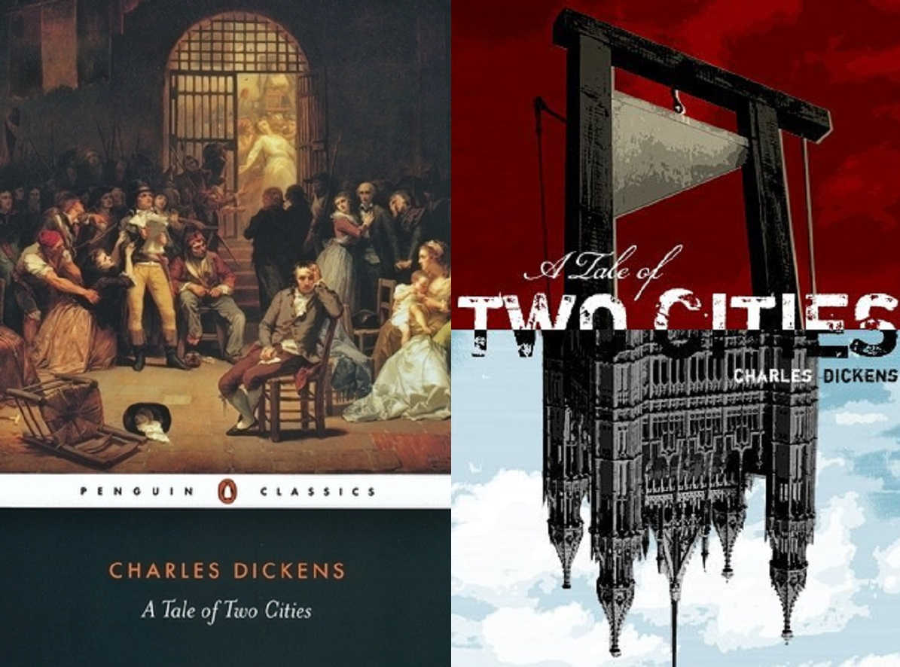

Poveste despre două orașe de Charles Dickens

Actiunea romanului se desfasoara in doua orase importante ale secolului al-XVIII-lea - Londra si Paris, in
timpul revolutiei franceze din 1789.
Pe fundalul ororilor revolutiei apare viata familiei Manette. Doctorul Alexandre Manette este eliberat din cruda
inchisoare Bastilia dupa optsprezece ani de intemnitare pe nedrept. Cu ajutorul fiicei sale, Lucie, si a prietenului
sau de o viata, Jarvis Lorry, doctorul isi reia viata in Londra, fugind din Parisul mizer si prevestitor de rele.
Lucie se casatoreste cu Charles Darnay, nobil francez care isi reneaga numele de vita nobila si emigreaza din Franta,
nesuportand raul facut de familia sa celor napastuiti. Odata cu izbucnirea revolutiei, Charles se intoarce in Paris pentru
a veni in ajutorul unui slujitor credincios intemnitat fara vina.
In acele vremuri, poporul francez, stors pana la ultima picatura de nobilime, ajuns in cele mai inumane conditii,
insetat de sange si de razbunare, ii intemniteaza si executa pe toti nobilii.
Charles Darnay, fost Evremonde, are parte de aceiasi soarta. Insa in momentul executiei este ajutat sa evadeze de
englezul Sydney Carton, indragostit de sotia sa, care jurase sa fie ingerul pazitor al acesteia si al familiei fetei.
Acesta profita de asemanarea cu Charles si in timpul unei vizite ii ia locul la inchisoare. Este executat, murind cu
zambetul pe buze si cu speranta intr-un viitor mai bun pentru prietenii lui si pentru poporul francez.